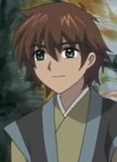

|
Helbram |
- The Seven Deadly Sins
- The Seven Deadly Sins: Revival of The Commandments
|
Helbram is King's best friend. He is a Holy Knight, Guila's master and subordinate from Hendrickson. He has a serious personality due to his human face. He is a shape-shifter. Hiroshi Kamiya voiced Helbram's True Form. |
|  |
Keefer |
|
Keefer is a strong warrior who Sakura had met in the land of Storm. He has an love interest in Charme, his friend. He is a determined, caring, kind, and serious. |
 |
N |
- Pokemon Black and White 2: Introduction Movie
|
N appeared as a recurring character in the Pokemon anime. He is a mysterious man with the ability to hear Pokemon voices. |
| |
Shuan |
- Children of the Whales
- Children of the Whales Specials
|
Shuan is the leader of the Vigilante Corps formed to protect the peace on the Mud Whale. Composed of the strongest thymia wielders, he is considered the strongest among the Viligante Corps. He is always smiling, but his true feelings are unknown. He has no problem with dying and does not see the point of emotions. |
| |
Tommy |
- Pokemon Advanced Generation
|
Tommy is a Pokemon Trainer trying to find his Marshtomp from several years ago. He returns to the Forsaken Ship to reclaim his missing Marshtomp. |
 |
Yuuta Takemoto |
- Honey and Clover
- Honey and Clover Specials
- Honey and Clover II
|
Yuuta Takemoto is a student at the art college. Takemoto studies architecture because he liked to build things with his hands. He has feelings for Hagumi but cannot express them. Takemoto is very close to Hagumi Hanamoto. He has a mellow mood. |